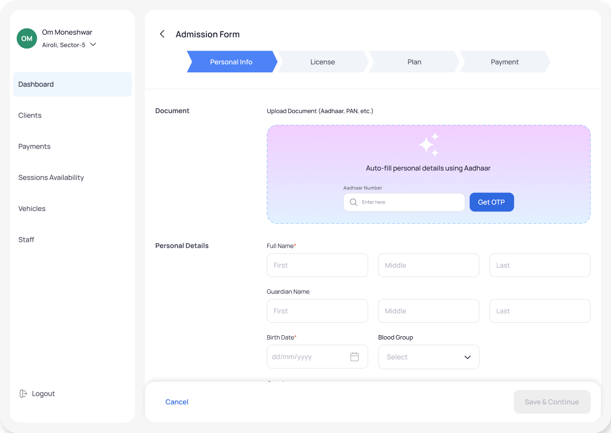
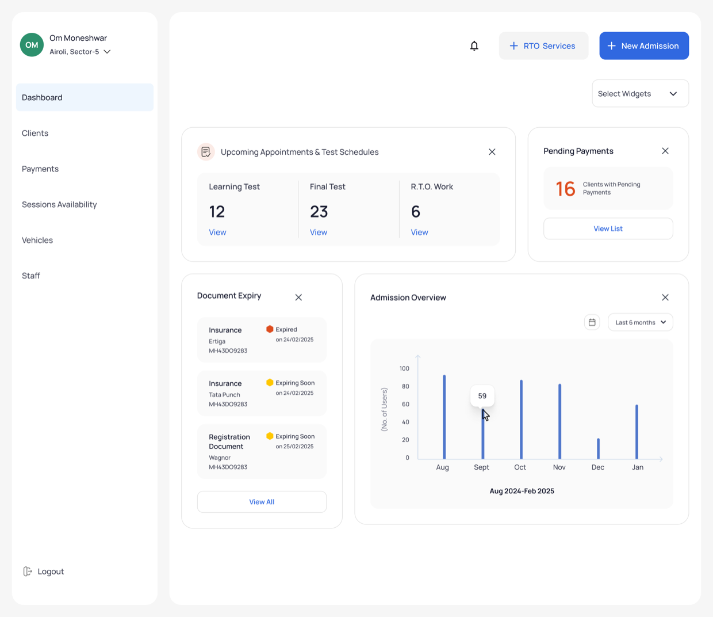
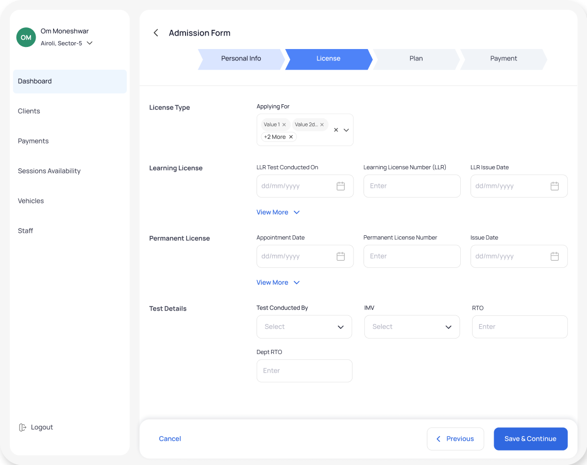
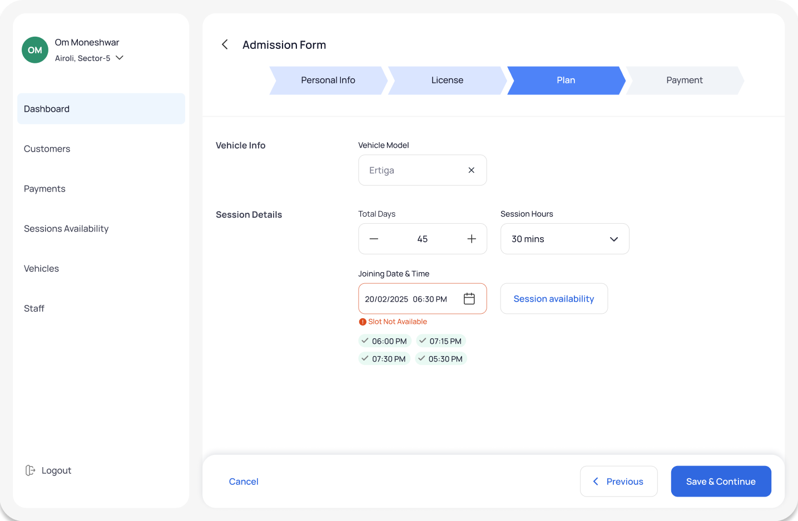
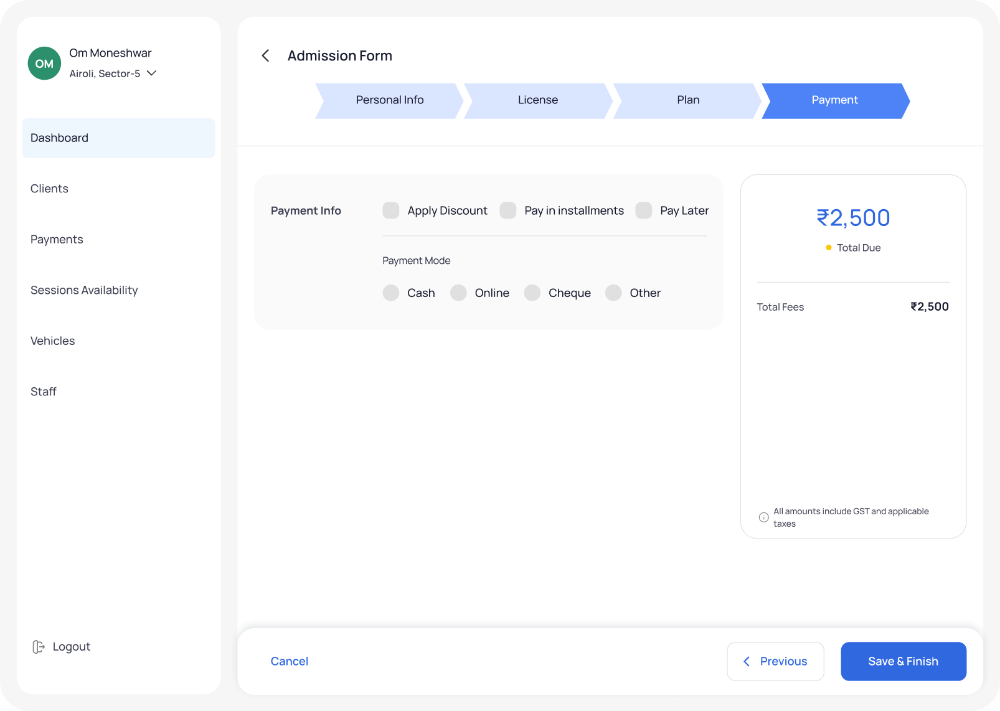
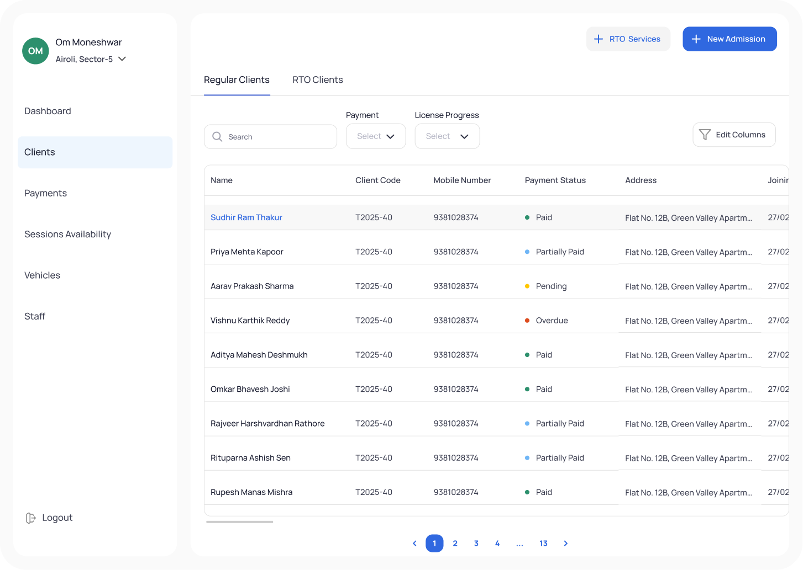
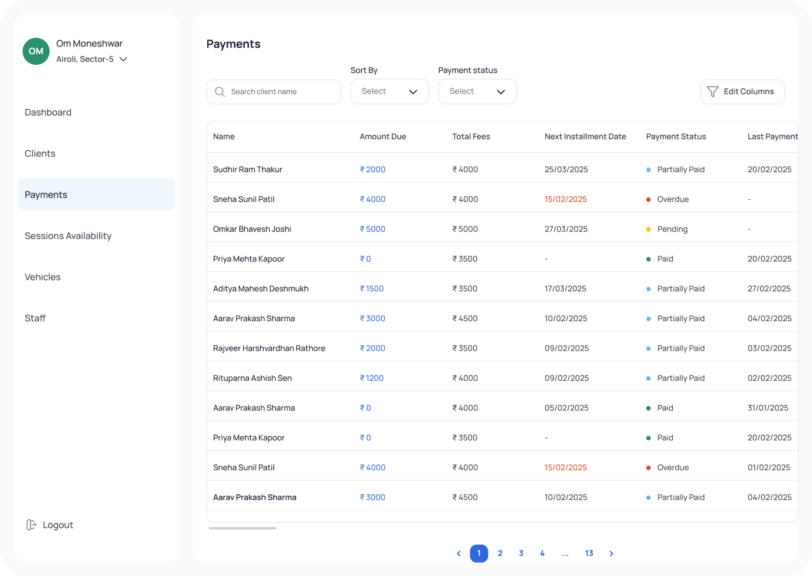
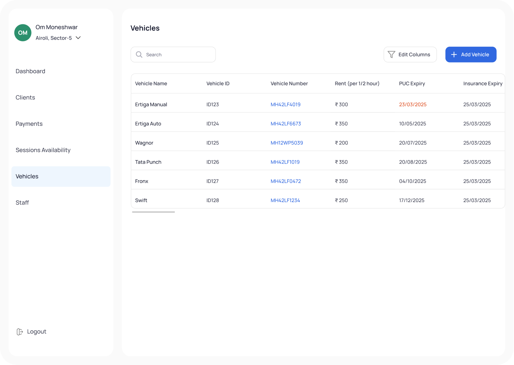
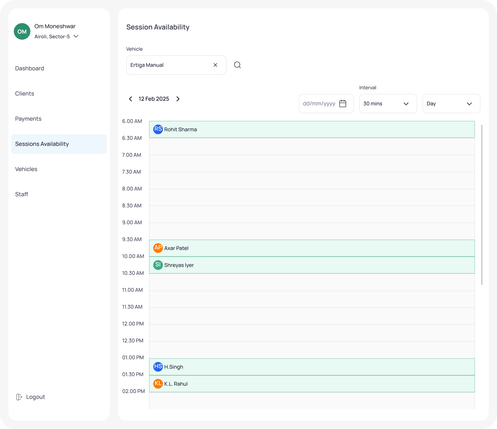

About 4 min read
Bridge
An end-to-end operations platform for driving schools — built to replace the registers, the phone calls, and the half-dozen tools that were never quite enough.
- Role
- Sole Product Designer, End-to-End
- Industry
- Driving School Management SaaS, Operations
- Timeline
- 2024–2026
- Scope
- Product Discovery · Product Strategy · Workflow Design · Information Architecture · UX/UI Design · Prototyping · Cross-Functional Collaboration · Developer Handoff
Where it started
Walk into most small driving schools and you’ll find one person running the entire operation out of their head. Admissions, payments, scheduling, student records, which car is free this afternoon — one admin, holding all of it together with registers, phone calls, and whatever habits had worked so far.
Bridge wasn’t built to add another tool to that pile. It was built to replace the pile.
The environment I was designing for
Every decision on this project ran through the same filter: would this hold up for someone with no time to learn it, no patience for extra steps, and zero margin for a mistake?
What research revealed
The decisions
Build the system around the tasks admins repeat most
Research showed that admins spend most of their day repeating the same operational tasks, which makes the work tiring and raises the risk of errors. So I mapped what they did most often, admissions, payment tracking, and scheduling, and made those the fastest, simplest paths in the product. A few seconds saved on something done all day, every day, adds up in a way a clever one-off feature never does.
Give admins a view of today, not a dashboard of metrics
Admins didn’t need charts. They needed to walk in and immediately know what required them that day. So the main screen became a working view, not a reporting one — what’s happening, what’s pending, what needs a follow-up, nothing to interpret.
Make the system remember things, so admins don’t have to
Re-typing the same student details into form after form was quietly eating hours every week. Wiring up eKYC with Aadhaar and building auto-fill around it meant information entered once, at admission, just showed up everywhere else it was needed, which solved for more than time. It closed off an entire category of manual mistakes.

Stay narrow, on purpose
There was a real pull to also design for students and instructors while I was in there. I didn’t. Admin operations were the actual bottleneck, and I’d rather understand one role completely than serve three roles halfway.
The work
Dashboard
Everything an admin needs to know about today, built to be scanned in under a minute, not read.

Admission Flow
A form that used to take real effort, broken into logical steps and mostly filled out by eKYC before the admin has to type anything.



Students, Payments & Vehicles
One place to check and update records that used to live across three.



Session Scheduling
A live view of who’s booked and what’s available, so a double-booking stops being a daily risk.

WhatsApp Automation
Confirmations, reminders, and offers that used to depend on someone remembering to send them, now sent on their own.
The impact
Nothing here is inflated — these are the changes admins described once Bridge was in daily use:
Noticeably less time spent switching between tools to do routine work
Faster decisions during the day, since the context was already in one place
Fewer errors tied to manual entry and relying on memory
Admissions and follow-ups that felt smoother to students too, not just to the admin running them
What I took away
If there’s one thing Bridge taught me, it’s that the best decision on a project like this is usually what you choose not to build.
Staying narrow to admin workflows meant I could actually understand the problem instead of skimming the surface of five problems at once. And the admins I talked to never once asked for a new feature — they asked for less friction in what they already had to do. That reframed what “valuable” meant on this project.
It wasn’t capability. It was clarity.
Taking something that already existed and organizing it well turned out to matter more than almost anything I could have added.